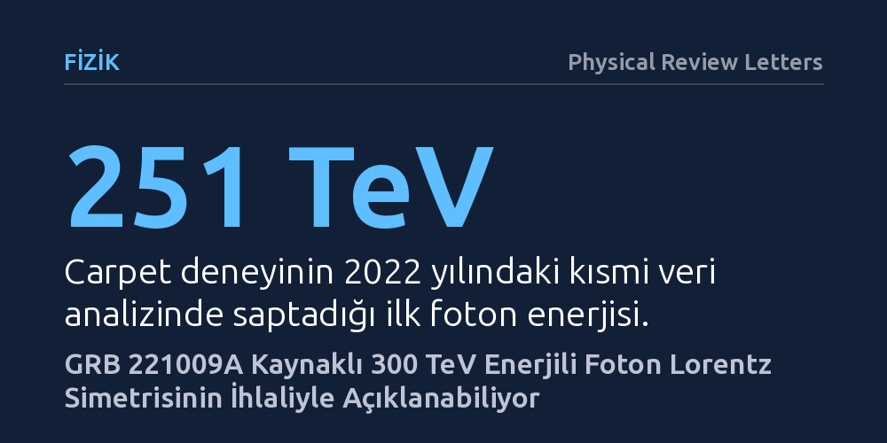

FIZIK · Physical Review Letters · 2026-09-09
Carpet deneyinin GRB 221009A patlamasından saptadığı yaklaşık 300 TeV enerjili rekor fotonun Dünya'ya nasıl ulaştığı araştırıldı. Standart modellerin açıklayamadığı bu gözlemin, uzay-zaman simetrisini esneten Lorentz ihlali senaryolarıyla tutarlı olduğu belirlendi.
Evrenin en şiddetli patlamasından gelen bu rekor foton, Einstein'ın görelilik kuramının temel taşı olan Lorentz simetrisinin aşırı yüksek enerjilerde kırılabileceğini düşündürüyor.

Gökbilimciler 2022 yılının sonlarında "tüm zamanların en parlak" gama ışını patlaması olarak kayıtlara geçen GRB 221009A olayına tanıklık etti. Milyarlarca ışık yılı uzaklıktaki dev bir yıldızın çöküşüyle tetiklenen bu patlama, uzaya muazzam miktarda yüksek enerjili ışıma yaydı. Ancak bu patlamadan Dünya'ya ulaşan bazı sinyaller, astrofizikçilerin elindeki mevcut modelleri zorlayan beklenmedik bir tablo ortaya çıkardı.
Standart fizik teorilerine göre, yüzlerce teraelektronvolt (TeV) mertebesindeki aşırı enerjili fotonların derin uzayda milyarlarca yıl serbestçe ilerlemesi mümkün değildir. Bu yüksek enerjili fotonlar, evreni dolduran kozmik arka plan ışığıyla çarpışarak elektron-pozitron çiftlerine dönüşmeli ve Dünya'ya ulaşamadan sönümlenmelidir. Dolayısıyla bu kadar yüksek enerjili bir ışığın dedektörlerimize ulaşabilmesi, ya fotonların yolculuğunda bilinmeyen bir koruma mekanizmasının devrede olduğunu ya da temel fizik yasalarında bir eksiklik bulunduğunu düşündürmektedir.
Rusya'daki Baksan Yeraltı Scintillation Teleskobu bünyesinde çalışan Carpet işbirliği, 2022'de yayımladığı kısmi analizde GRB 221009A patlamasıyla eşzamanlı olarak yaklaşık 251 TeV enerjisinde bir foton saptadığını duyurmuştu. Yakın zamanda tamamlanan nihai veri seti analizi ise bu tespiti daha da güçlendirdi ve fotonun enerjisini artı 43 ve eksi 38 TeV belirsizlikle 300 TeV olarak güncelledi. Bu değer, standart fizik öngörülerinin çok ötesinde bir enerji seviyesini temsil etmektedir.
Araştırmacılar Giorgio Galanti ve Marco Roncadelli, Physical Review Letters'da yayımlanan çalışmalarında Carpet deneyinin teyit ettiği bu rekor gözlemi masaya yatırdı. Yazarlar, standart astrofizik süreçlerinin böylesi bir parçacığın Dünya'ya ulaşmasını imkânsız kıldığını belirterek, uzay-zamanın temel yapısında Lorentz simetrisinin ihlal edildiği kuramsal senaryoları matematiksel ve kinematik modellerle sınadı.
Albert Einstein'ın özel görelilik kuramının merkezinde yer alan Lorentz değişmezliği, fizik yasalarının ve ışık hızının tüm eylemsiz gözlemciler için özdeş olduğunu varsayar. Ancak kuantum kütleçekimi modellerinin bir kısmı, Planck ölçeği adı verilen son derece küçük mesafelerde ve aşırı yüksek enerjilerde bu simetrinin kırılabileceğini öngörür. Lorentz simetrisinin ihlali durumunda fotonun enerji ve momentumu arasındaki standart ilişki değişir.
Galanti ve Roncadelli'nin analizleri, Lorentz simetrisi ihlal edildiğinde yüksek enerjili fotonların arka plan ışığıyla etkileşime girerek elektron-pozitron çifti üretme eşiğinin yukarı kaydığını göstermektedir. Bu kinematik değişim, fotonun soğurulma olasılığını ciddi oranda düşürmekte ve evreni bu parçacıklar için şeffaf hale getirmektedir. Böylece GRB 221009A kaynağından fırlatılan 300 TeV enerjili bir foton, milyarlarca ışık yılı mesafeyi neredeyse hiç engelle karşılaşmadan aşarak yerdeki dedektörlere ulaşabilmektedir.
Bu bulgu, modern fiziğin en büyük hedeflerinden biri olan kuantum mekaniği ile genel göreliliği birleştirme çabalarında somut bir ipucu sunmaktadır. Eğer doğrulanırsa, uzay-zaman dokusunun kusursuz bir süreklilik arz etmediğine ve aşırı enerjilerde klasik göreliliğin sınırlarına ulaşıldığına dair ilk deneysel işaretlerden biri aralanmış olacaktır.
Bununla birlikte, ortaya konan modelin henüz bir ön bulgu niteliğinde olduğu unutulmamalıdır. Eldeki analiz yalnızca tek bir foton saptamasına dayanmakta ve ölçümdeki belirsizlik aralığı kuramsal parametrelerin kesin biçimde sabitlenmesine izin vermemektedir. İddianın sağlam bir temele oturması için gelecekteki gama ışını patlamalarından benzer enerjilerde başka fotonların da bağımsız gözlemevlerince kaydedilmesi gerekmektedir.